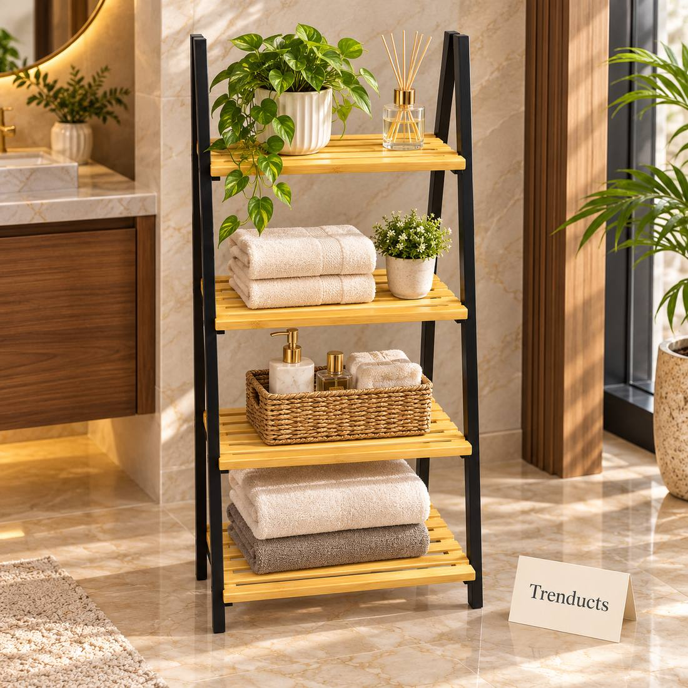
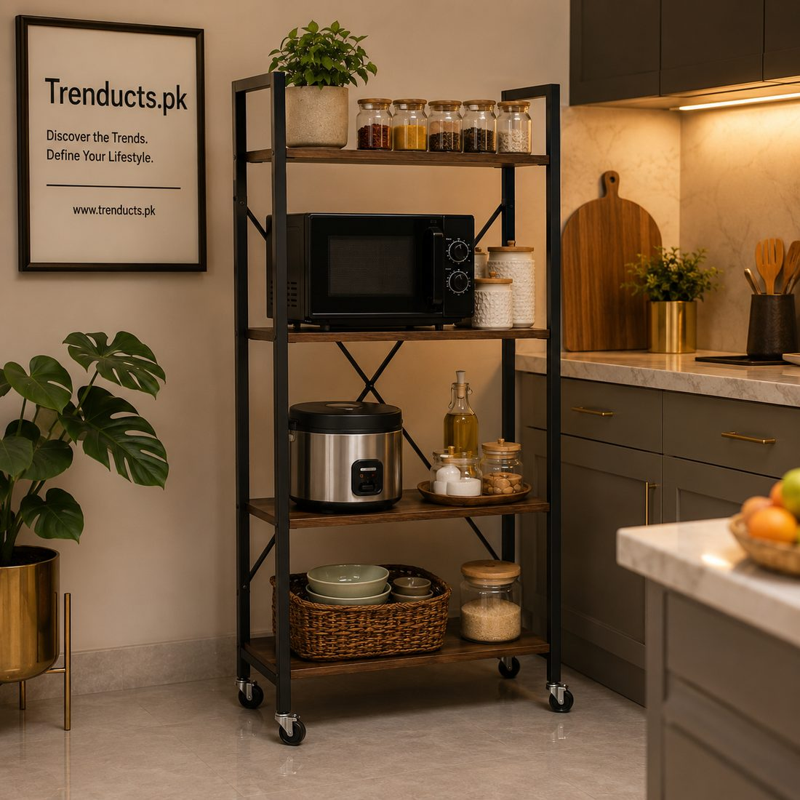
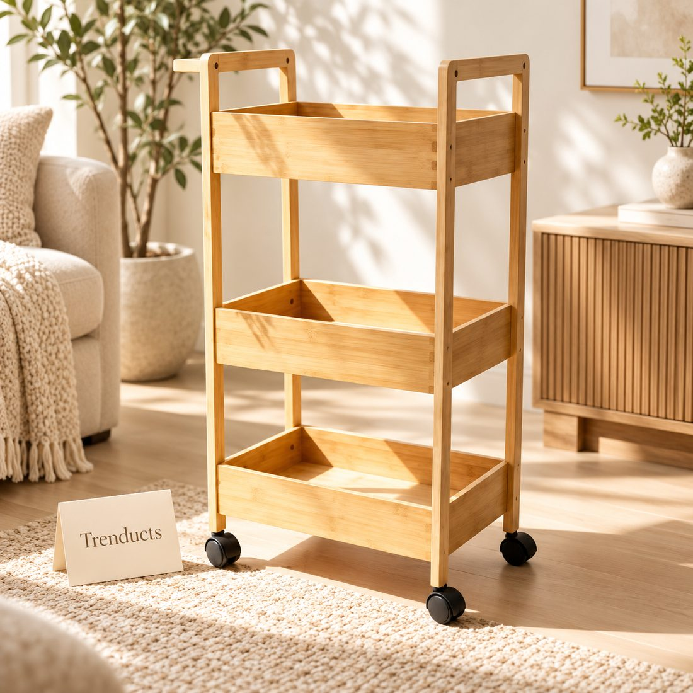

In most Pakistani households, groceries are bought once a month. At the start of the month, someone goes to the wholesale market or a big store and returns with a car full of rashan: a sack of atta, several kilos of rice, daal of four or five kinds, sugar, tea, ghee or oil, spices, soap and detergent. Buying in bulk saves money, but storing it in a small kitchen is another matter. Without a system, packets get pushed to the back, ants find the sugar, and half-used daal goes stale. A well-organised rashan shelf solves all of that.
Make a master list
Before reorganising, write down everything your family buys each month and roughly how much. This list helps you decide how much shelf space you need, and it doubles as a shopping list next month. Group items into categories: grains and flour, pulses, cooking oils, spices, tea and beverages, snacks, and cleaning supplies.

Choose the right shelving
Many kitchens do not have a built-in pantry, so freestanding racks are the practical answer:
- Ladder shelves with several tiers use vertical space and fit into narrow corners
- Movable racks with wheels can be rolled out for cleaning and are ideal for heavy items
- Bamboo trolleys with handles look warm and suit open kitchens
- Metal racks with adjustable shelves handle the weight of oil tins and rice bags
Measure the space carefully and check the weight capacity of each shelf, because a full shelf of daal and oil is heavier than it looks.
Heavy at the bottom, daily at eye level
Arrange the rack by weight and frequency of use. Heavy sacks of atta and rice, oil tins and bottled water go on the lowest shelf, which is safer and easier to lift from. Items you use daily, such as tea, sugar, daal and spices, sit at eye level. Lighter, less used items like extra soap bars, baking supplies and special spices for Eid go on the top shelf.
Decant into containers
Plastic packets are hard to stack and invite insects. Decant rice, daal, sugar and flour into airtight containers, ideally transparent so you can see how much is left. Label each container with the name and the date bought. Square containers use shelf space more efficiently than round ones. Keep the original packet's expiry date by cutting it out and taping it to the container.

First in, first out
Pakistani families hate wasting food, and a simple rule prevents it: use older stock first. When the new month's rashan arrives, move the remaining old items to the front and put new stock behind. Do this especially for oil, spices and packaged foods with expiry dates.
Keeping pests away
Weevils in rice, ants in sugar and cockroaches near oil are common problems, especially in summer and the monsoon. A few habits help:
- Keep containers tightly sealed and wipe spills immediately
- Add a few dried red chillies or bay leaves to rice and daal containers
- Clean shelves once a month before the new rashan arrives
- Keep racks slightly away from the wall so you can clean behind them
A shelf for cleaning supplies
Never store detergent, bleach and phenyl on the same shelf as food. Give cleaning supplies a separate rack, ideally near the washing area or under the sink, and keep them out of children's reach.

The monthly reset
Make the day the rashan arrives your monthly reset. Wipe the shelves, check what is left, update the list, refill containers and put everything back in its place. It takes about half an hour, and it keeps the system working all month long.
Saving money with a tidy pantry
When you can see everything at a glance, you stop buying duplicates. Many families discover they had three packets of the same spice hidden at the back. A clear pantry also makes it easier to plan meals, which reduces waste and last-minute takeaway orders.
Get the racks you need
Ladder shelves, wheeled storage racks and bamboo trolleys are available on trenducts.pk, with delivery to every city in Pakistan. Set up your rashan shelf once, and every month after that becomes easier.